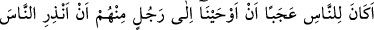
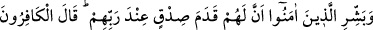
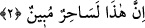

“Ben senden bir içecek istediğimde işte sana bu meseleyi, bir de başka bir meseleyi
öğretmek niyetindeydim. Ama şimdi artık meselenin öneminden dolayı onu sana ancak
bin dinar aldıktan sonra öğretirim.” dedi.
O da ona bin dinar verdi. İmam Muhammed:
“Kızına eğer bir mushaf verirsen, yeminini bozmamış ve yerine getirmiş olursun.”
diye cevap verdi. Asrının âlimleri kendisine bunun nasıl olduğunu sordular. İmam da:
“Allah Teâlâ’nın: “Yaş kuru hiçbir şey yoktur ki apaçak bir kitapta bulunmasın.”
(el-En‘âm, 6/59) buyurduğunu söyleyerek cevap verdi. Bu cevap onlarca da kabul
gördü.
İlim bir incidir, fakat kıymeti olduğu zaman iyidir
Cehâlet öyle bir derttir ki dermanı yoktur
et-Te’vîlât’da şöyle denilir: “Sana indirilen bu âyetler, ezelde sana vaadettiğim, sana
ve ümmetine miras olarak verdiğim “hikmetli Kitab’ın âyetleridir.” O Kitap hakkında
şöyle buyurmuşumdur: “Sonra Kitâb’ı, kullarımız arasında seçtiklerimize miras
verdik.” (Fâtır, 35/35)
Cenâb-ı Hak bu kitabı diğer kitaplardan hakîm olma özelliği ile ayırdı. Yani o, dînî
hükümleri değiştirmek ve nesh etmek sûretiyle bütün kitaplara hükmeden, fakat hiçbir
kitabın kendisine aslâ hükmedemediği bir kitaptır. Bu ümmeti de diğer ümmetlerden
ayırıp seçerek özel kıldı. Onlara bu kitabı mîras bıraktı. Bu verâsetin mânâsı, bu
Kitab’ın bu ümmet içersinde bâki kalması, birbirlerinden onu mîras olarak devralmaları
ve kendisinin önceki kitapların tamamını nesh etmesi gibi onu hiçbir kitabın nesh
etmemesi demektir.
2. İçlerinden bir adama: “İnsanları uyar ve inananlara Rab’leri katında kendileri
için (yüksek) bir doğruluk derecesi olduğunu müjdele!” diye vahyetmemiz,
insanlara tuhaf mı geldi? Kâfirler: “Bu, apaçık bir sihirbazdır.” dediler.
“İçlerinden bir adama” kendi cinslerinden bir beşere: “İnsanları uyar ve
inananlara Rab’leri katında kendileri için bir doğruluk derecesi” yani, âhiretlerine
hazırlık için önceden yapıp gönderdikleri sâlih ameller ve kendileri için hazırlanmış
yüksek bir derece “olduğunu müjdele!” inkâr edenleri müjdeleme. Çünkü onlar